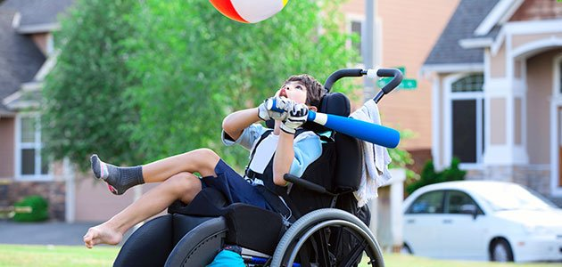
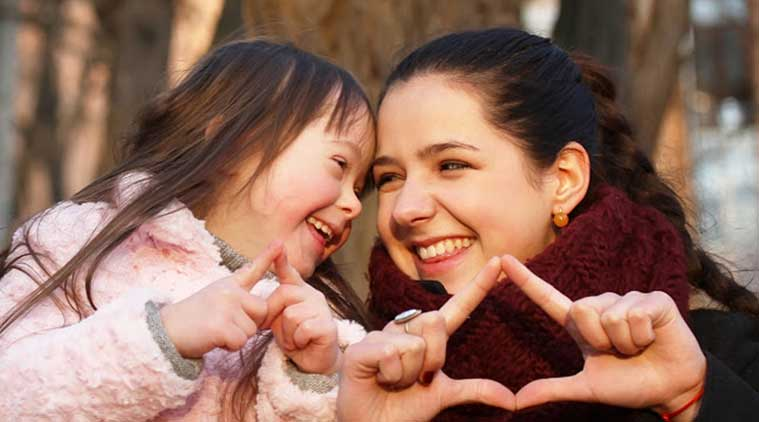

Kids With Disabilities
Every year thousands of children challenge themselves while having the time of their lives at 15 Easter Seals camps nationwide. With help from Friends of We Care and its many donors and sponsors, Easter Seals works to ensure that everyone with a disability can attend camp and has access to the equipment and services they need to make the most of their abilities. Easter Seals camps hold a multitude of physical and emotional benefits including the development of social skills, independence, self-esteem and confidence. For a child with a disability, improvement of these developmental traits is imperative to their growth. A summer camp experience allows a child to discover new physical capabilities while making friends, trying new activities, and navigating a world designed for their special needs.
We Care are very proud to be part of this opportunity towards helping a child focus on their abilities…not their disabilities.
We help kids be kids!
Friends of We Care was created under the simple belief that all children with special needs deserve the same experiences as other kids. Easter Seals camps allow kids with disabilities to achieve goals and experience things they could never have imagined possible. Camps give them the chance to play sports, have adventures, learn life skills and make new friends. Going to a summer camp where their disabilities don’t limit their activities builds enormous independence, courage, and self-confidence.
"Camps let kids focus on their abilities, not their disabilities!"
How it all started
Having a son with a disability, Gary Wright believed that every child should have equal opportunities, regardless of their differences. He encouraged a group of co-workers to come together to host the first Friends of We Care fundraiser in 1983. The casino-style Monte Carlo Night brought in $18,000 that year and our mission was launched.The organization grew each year, gaining more and more support from the Food service and Hospitality Industry across the country, and raising money through various small-scale events.
Today, Friends of We Care operates over a dozen events across the country, each raising anywhere from $5,000 – $200,000. Through sponsorships, event participation, and direct donations, Friends of We Care raises over $1,000,000 annually to provide over 5,000 days for kids to enjoy an unforgettable camp experience. We have managed not only to enrich the lives of thousands of kids, but have also built a strong, generous industry community that works hard to bring smiles to the faces of countless children every year.
Donations..
You can help us in helping these kids. Your donations directly goes to the fund which is then used for organizing camps for kids. A generous donation from you can help to brighten up the future of the kids.
If you are willing to help us and kids, please click on donate now and it will take you directly to the main donation page of "friends of we care".